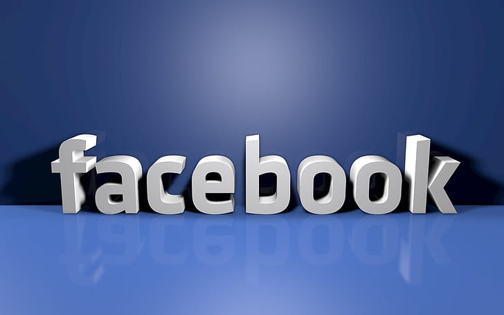

Facebook

The History of Facebook
1. Introduction:
Facebook is a social media platform that was founded by Mark Zuckerberg along with his college roommates Andrew McCollum, Eduardo Saverin, Dustin Moskovitz, and Chris Hughes. Launched in 2004, Facebook quickly gained popularity and became one of the largest social networking sites in the world. Here is a timeline highlighting the major milestones in the history of Facebook.
2. The Founding of Facebook (2004):
-
Mark Zuckerberg, a student at Harvard University, created a website called "TheFacebook" on February 4, 2004. Initially, it was designed as a platform for Harvard students to connect and share information. The site expanded to other Ivy League schools and gradually to universities across the United States
3. Expansion and Name Change (2005):
- In 2005, Facebook expanded its reach beyond educational institutions and opened its doors to high school students and eventually anyone aged 13 and above. The company also dropped "The" from its name and became known simply as Facebook.
4. Introduction of News Feed (2006):
- Facebook launched its platform for developers in May 2007, allowing third-party developers to create applications and games that integrated with the Facebook platform. This move led to an explosion of third-party apps and greatly expanded the functionality of the site.
5. Instagram Acquisition (2012):
-In April 2012, Facebook acquired the popular photo-sharing app Instagram for approximately $1 billion. This acquisition marked Facebook's entry into the mobile photo-sharing market and provided a significant boost to its user base and engagement.
6. WhatsApp Acquisition (2014):
-In February 2014, Facebook acquired the messaging app WhatsApp for $19 billion. This acquisition further expanded Facebook's reach into the mobile messaging market and added millions of active users to its ecosystem.